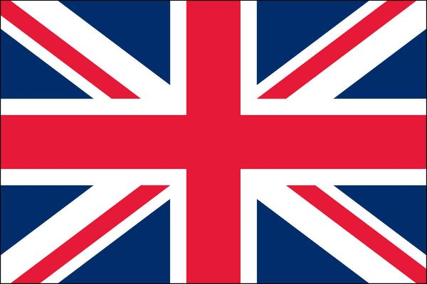

Kieran Johansson Rye
An awesome dude, but how did he come to be?
Kieran Johansson Rye was born in Umeå, Sweden on the 26th October 2000.
He spent the first five years of his life in Umeå before moving to Brighton, England in July 2005.
He then lived there and spent most of his childhood in Brighton before then moving back to Umeå, Sweden on 28th May 2016.
Then on the 29th August 2016, he embarked on his most important journey to-date. Attending NTI Gymnasiet Umeå.
And that my friends, is how you know the one and only Brit, Kieran.
